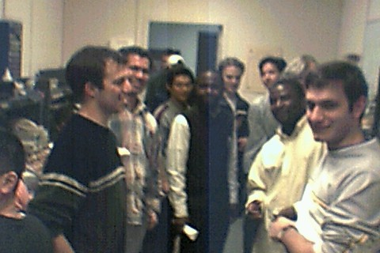

The Department of Electrical Engineering invites you to use the EE Student Projects Laboratory at 1212 S.W. Mudd Building
This is an "open doors" laboratory. This essentially means that you can walk in and work on whatever project you would like, as long as the laboratory doors are open.
The laboratory is equipped with electronic test and measurement equipment, discrete components, breadboards and soldering stations. If you have any projects in mind, you can build and test it over here. There will be project ideas made available to you through the lab TA from time to time. If you are new to electronics and are keen on learning more, this is a quick way to pick up skills! If you are even peripherally interested, just come in, talk to us, and tinker with the tools and equipment.
|  | ||
| Lab during busy hours | Measuring soil moisture | An audio amplifier on a breadboard |
|
|
||
| Testing the audio amplifier | AM transmitter and receiver testing | Binary Clock |
| Laboratory at peak hours | Students at work | Testing the EKG monitor |
| Further EKG testing |
To ensure a safe laboratory a list of rules and fundamental safety principles has been developed and provided for you here. These rules must be followed at all times. This, in the form of a contract, is available here. Please print this out, sign it, and keep a copy for yourself. The signed copy should be handed over to John Kazana.